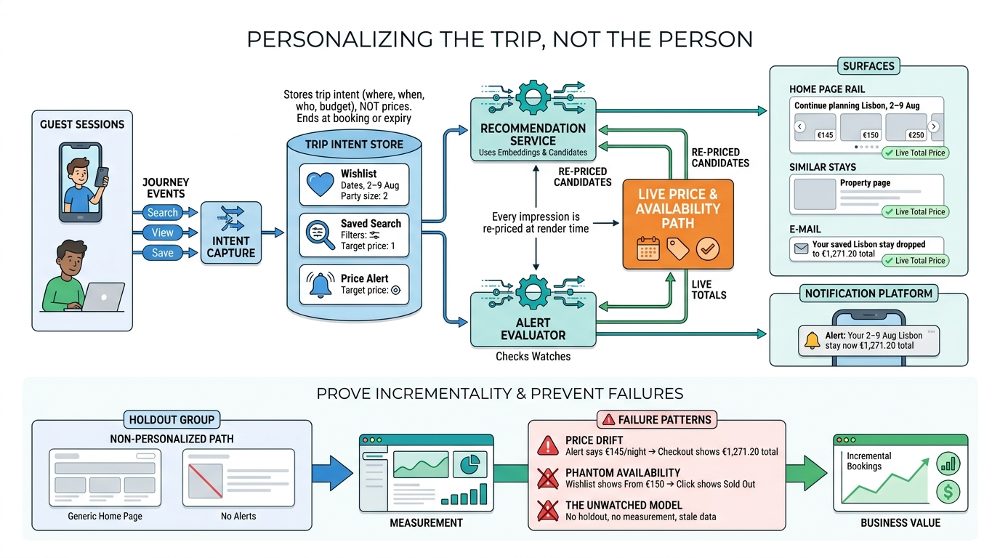

Part IV — DISCOVERY: From Intent to Bookable Stay
Remembering the Traveler: Personalization, Recommendations and Saved Intent

Image generated by Google Gemini (gemini-3-pro-image-preview)
Part IV — DISCOVERY: From Intent to Bookable Stay

Image generated by Google Gemini (gemini-3-pro-image-preview)